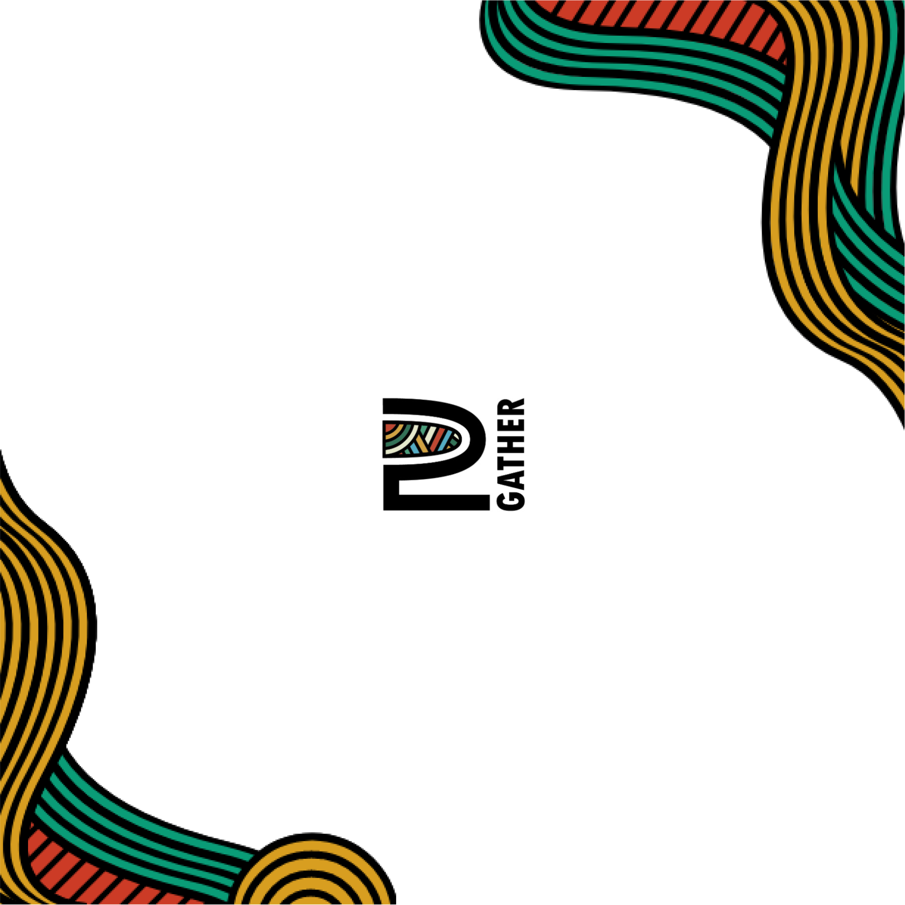

Specialisation
Group Project, Presentation
Coding
UI design


This was a 1 week project where we were meant to make a simple presentation showcasing a topic we found interesting.
Jump to Website

Intro
MORE THAN A POWERPOINT
As a group we chose the topic of immersive Web animations, we decided in the end to go all out and put our learnings into practice. Why just make a normal presentation? Instead we actually implemented our learnings in the form of a simple website in order to showcase the true potential of immersive animations. Separately we found several different types of animations we found interesting and began implementing them ourselves.
Parallax onscroll
A JOURNEY OVER THE MOUNTAINS
For myself in particular I had always found parallax scrolling effects to be incredibly interesting and eye catching, making the user feel he is part of the journey just by simply scrolling through. I created several different layers of a mountain using different shades of the same color to symbolize distance and with each layer I changed the speed it moved with the user's scroll.
The do's and dont's of animations
WHAT NOT TO DO
I went on to use animations on scroll, which were triggered once the page reached a specific height and followed it up with css animations to visually depict the story I was telling with my words.
Take Aways
THAT'S A PRESENTATION
Even though the website is not responsive, we were all ecstatic with the final product, just the fact that we were able to create so many different effects in such a short period of time and even go far beyond what was asked of us.
Similar projects
